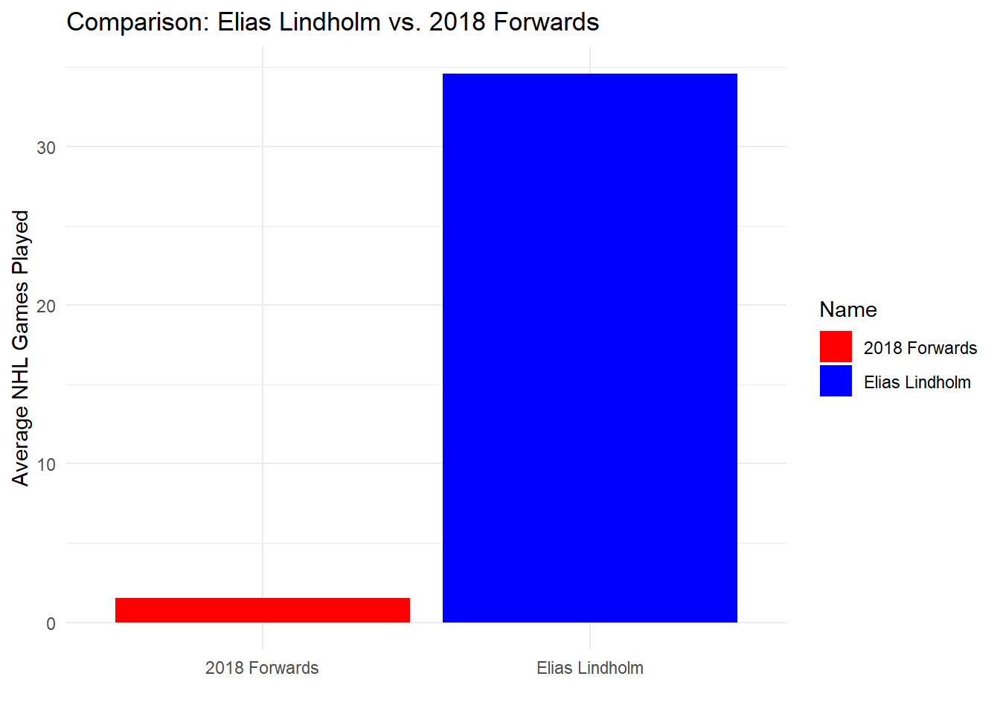
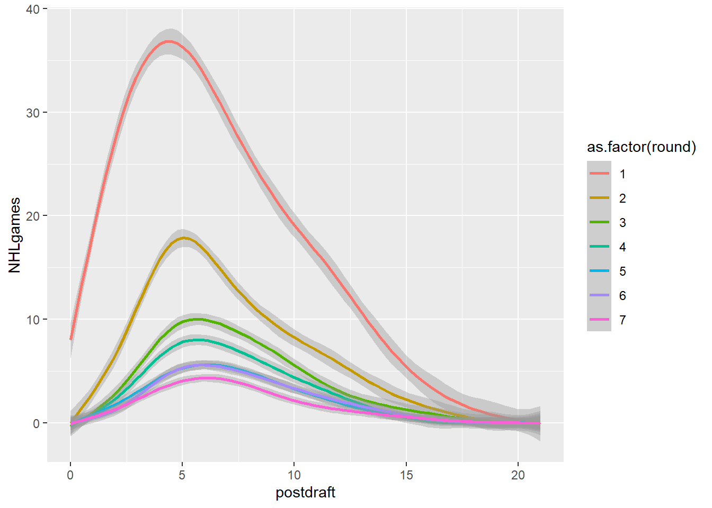

In this assignment, we are going to practice creating visualizations for tabular data. Unlike previous assignments, however, this time we will all be using the same data sets. I’m doing this because I want everyone to engage in the same logic process and have the same design objectives in mind.
LEARNING OBJECTIVES
Demonstrate that you can manipulate tabular data to facilitate different visualization tasks. The minimum skills are FILTERING, SELECTING, and SUMMARIZING, all while GROUPING these operations as dictated by your data.
Demonstrate that you can use tabular data to explore, analyze, and choose the most appropriate visualization idioms given a specific motivating question.
Demonstrate that you can Find, Access, and Integrate additional data in order to fully address the motivating question.
The scenario below will allow you to complete the assignment. It deals with data that are of the appropriate complexity and extent (number of observations and variables) to challenge you. If you want to use different data (yours or from another source) I am happy to work with you to make that happen!
SCENARIO
Imagine you are a high priced data science consultant. One of your good friends, Cassandra Canuck, is an Assistant General Manager for the Vancouver Canucks, a team in the National Hockey League with a long, long…. long history of futility.
This season feels different.
The Canucks are currently among the league leaders and appear to be on their way to their first playoff appearance in many years. A few weeks ago, the Vancouver Canucks decided to trade an underperforming player with a high upside and their first round draft pick to the Calgary Flames for Elias Lindholm, a very solid forward that might prove to be the missing piece of their Stanley Cup puzzle. Exciting!
Except that now the Canucks are struggling. They’ve lost 4 straight games and have seemingly lost their identity as a team. The fans are questioning whether the trade was worth it. Woe is me!
For the purposes of this exercise, let’s set the 2024 NHL draft order using the Tankathon Simulator. The NHL uses a lottery system in which the teams lowest in the standings have the highest odds of getting the first overall pick. This year the Canucks are at the top of the league, and positioned to have the 31st overall pick. According to the simulator, Calgary will pick at number 2 (which is very valuable!), and the Canuck’s pick at 31.
Here is a screenshot:
Here is the question:
Was the trade worth it? This trade has a high likelihood of becoming what we call a rental. Elias Lindholm is on an expiring contract, meaning Vancouver is guaranteed to hold his contract only through the end of the season. They might be able to extend him, but that depends on the salary cap.
Meanwhile, Calgary can draft a player at position 31, who may or may not turn out to be of equal or greater value than Lindholm.
Was the trade worth it? Did Vancouver or Calgary “win” the trade?
Can we make some visualizations that help us answer this question?
Create a new post in your portfolio for this assignment. Call it something cool, like NHL draft analysis, or Hockey Analytics, or John Wick….
Copy the data files from the repository, and maybe also the .qmd file.
Use the .qmd file as the backbone of your assignment, changing the code and the markdown text as you go.
THE DATA
How can we evaluate whether trading a first round pick for a rental player is a good idea? One approach is to look at the historical performance of players from various draft positions.
I’ve created a data set that will allow us to explore player performance as a function of draft position. If you are curious as to how I obtained and re-arranged these data, you can check out that tutorial here. For this assignment, though, I want to focus on the visualizations.
Calendar year in which the player was drafted into the NHL.
name
Item
Full name of the player.
round
Ordinal
Round in which the player was drafted (1 to 7).
overall
Ordinal
Overall draft position of the player (1 to 224)
pickinRound
Ordinal
Position in which the player was drafted in their round (1 to 32).
height
Quantitative
Player height in inches.
weight
Quantitative
Player weight in pounds.
position
Categorical
Player position (Forward, Defense, Goaltender)
playerId
Item
Unique ID (key) assigned to each player.
postdraft
Ordinal
Number of seasons since being drafted (0 to 20).
NHLgames
Quantitative
Number of games played in the NHL in that particular season (regular season is 82 games, playoffs are up to 28 more).
In this case, we have a dataframe with all the drafted players from 2000-2018, their position, their draft year and position, and then rows for each season since being drafted (postdraft). The key variable here is NHLgames, which tells us how many games they played in the NHL each season since being drafted. Whether drafted players even make the NHL, and how many games they play, might be a good proxy to understand the value of a draft pick we just traded away.
SIMPLE SCATTERPLOT
One thing to realize about professional hockey is that it is pretty rare for a player to play in the NHL right after being drafted. Players get drafted when they are 18 years old, and they usually play in the juniors, minor leagues, or the NCAA for a bit to further develop.
Let’s use a scatterplot to visualize this phenomenon with the most recent draft classes.
As you can see, the players drafted in June of 2022 didn’t play much last season. There are few things wrong with this visualization, however:
Overplotting. All those points on the y=0 line represent about 32 players each. Can you think of a way that adding extra channels might help?
Labelling. Can we create a solid figure caption and better axis labels for this figure? In your caption, please specify the task(s) the visualizaiton is intended to facilitate, as well as the marks, channels, and key-value pairs used.
Key-Value pairs: Looks like we are using “round” as a continuous variable. Can we change this to an ordered factor?
EXPANDED SCATTERPLOT
The data from the most recent drafts aren’t really helpful for our question. Let’s go back in time and use a draft year that has had some time to develop and reach their potential. How about 2018?
Code
draft2018<-NHLDraft%>%filter(draftyear==2018& postdraft<6) # wondering why I've filtered postdraft to be less than 6? Try removing that filter to see what happens.ggplot(draft2018, aes(x=round, y=NHLgames))+geom_point()
Hmmm… in addition to the problem of overplotting, we’ve got an additional issue here. We actually have two keys and one attribute. The attribute is NHLgames, and the keys are round and postdraft, but we are only using round.
Postdraft indicates the number of seasons after being drafted. We have several choices here. We can make a visualization that uses both keys, or we can somehow summarize the data for one of the keys.
For example, let’s say we just wanted to know the TOTAL number of NHL games played since being drafted.
Look closely at the two graphs above. How are they different?
STOP AND REFLECT
I’ve been a bit sneaky up to this point. You’ve probably been focusing primarily on my (crappy) visualizations. That’s fine, but let’s think about the manipulations to the TABULAR DATA I’ve had to perform.
I’m using the Tidyverse to do these manipulations. I set up the original data frame to conform to the tidy data principles (every column is a variable, every row is an observation), which is pretty much the base form of how we’ve discussed Tabular Data in class.
These functions come from the dplyr package that gets installed as part of the tidyverse. The basic categories of actions are:
mutate() adds new variables that are functions of existing variables
select() picks variables based on their names.
filter() picks cases based on their values.
summarise() reduces multiple values down to a single summary.
arrange() changes the ordering of the rows.
All of these work with group_by() so you can perform whichever operation on the groups that might be present in your data set.
Let’s get back to improving our understanding of the relative value of NHL draft picks. The figure above considers a single draft class (2018), and shows the total number of NHL games all the players have accumulated, separating each draft round on an ordinal x axis.
Fine, I guess, but we still have to deal with overplotting, and think about whether a scatterplot really helps us accomplish our task. For this figure do the following:
Overplotting. All those points on the y=0 line represent about 32 players each. Can you you think of a way that adding extra channels might help?
Labelling. Can we create a solid figure caption and better axis labels for this figure? In your caption, please specify the task(s) the visualizaiton is intended to facilitate, as well as the marks, channels, and key-value pairs used.
Key-Value pairs: Looks like we are using “round” as a continuous variable. Can we change this to an ordered factor?
SCATTERPLOT WITH OVERALL DRAFT POSITION
This approach might yield a better match with the scatterplot idiom. What if we ignore draft round, and use the player’s overall draft position instead? It also might help us focus on our motivating question! What is the potential value of pick 31, and how does Elias Lindholm compare to that value?
We are trying to address the notion of trading pick 31. How might you facilitate the task of evaluating picks in that range?
Create a caption and better axis labels for this figure.
What if we wanted to use more than just the 2018 draft class?
SCATTERPLOT SUMMARY
We seem to be running into an issue in terms of overplotting. Scatterplots are great, but they work best for two quantitative attributes, and we have a situation with one or two keys and one quantitative attribute. The thing is, scatterplots can be very useful when part of our workflow involves modeling the data in some way. We’ll cover this kind of thing in future assignments, but just a bit of foreshadowing here:
`geom_smooth()` using method = 'loess' and formula = 'y ~ x'

Adding the smoothed line doesn’t eliminate the overplotting problem, but it does indicate that it exists. We’ll cover other potential solutions (such as box plots and violin plots) to this issue later in the course, when we get to the notions of faceting and data reduction.
Why not include all the data? A scatter plot with that many players (4775) isn’t going to be great. But we could plot some sort of polynomial model to get a sense of the relationship between draft position and NHL games. We’ll filter to the first 8 years of their career.
`geom_smooth()` using method = 'gam' and formula = 'y ~ s(x, bs = "cs")'

DIVERGENCE
Enough esoteric wandering. The original version of this assignment focused on the relative value of draft picks in the NHL. This version has a more specific question. What might picks in the range of pick 31 conceivably yield? How often do picks in that range yield players of Elias Lindholm’s value?
I guess we’d better figure out what Elias Lindholm brings to the table.
Can you find him in our existing data? Can you think of a way to highlight him in the context of number of games played? What other kinds of data might we need to fairly evaluate Lindholm and pick 31?
HINT
In the GitHub repository there is a file called NHLdraftstats.csv. What’s in there? Can we use that information?
You will be surprised how these seemingly simple questions force you to explore the nuances of working with and visualizing tabular data.
OTHER STUFF TO CONSIDER
Do these visualizations change as a function of player position?
Is the number of NHL games played really the best metric to use?
CONCLUSION
Based on your visualizations, what would you advise regarding this trade proposal? Why?
`geom_smooth()` using method = 'loess' and formula = 'y ~ x'
Source Code
---title: "Hockey Analytics"subtitle: "Visualizations for Tabular Data"author: "Geraline Trossi-Torres"date: "2024-02-29"categories: [Assignment, DataViz, Visualization]image: "Profile3.jpg"code-fold: truecode-tools: truedescription: "2024 NHL Draft Picks"---## OVERVIEWIn this assignment, we are going to practice creating visualizations for tabular data. Unlike previous assignments, however, this time we will all be using the same data sets. I'm doing this because I want everyone to engage in the same logic process and have the same design objectives in mind.## LEARNING OBJECTIVES1. Demonstrate that you can manipulate tabular data to facilitate different visualization tasks. The minimum skills are FILTERING, SELECTING, and SUMMARIZING, all while GROUPING these operations as dictated by your data.2. Demonstrate that you can use tabular data to explore, analyze, and choose the most appropriate visualization idioms given a specific motivating question.3. Demonstrate that you can Find, Access, and Integrate additional data in order to fully address the motivating question.The scenario below will allow you to complete the assignment. It deals with data that are of the appropriate complexity and extent (number of observations and variables) to challenge you. If you want to use different data (yours or from another source) I am happy to work with you to make that happen!## SCENARIOImagine you are a high priced data science consultant. One of your good friends, Cassandra Canuck, is an Assistant General Manager for the Vancouver Canucks, a team in the National Hockey League with a long, long.... long history of futility.This season feels different.The Canucks are currently among the league leaders and appear to be on their way to their first playoff appearance in many years. A few weeks ago, the Vancouver Canucks decided to trade an underperforming player with a high upside and their first round draft pick to the Calgary Flames for Elias Lindholm, a very solid forward that might prove to be the missing piece of their Stanley Cup puzzle. Exciting!Except that now the Canucks are struggling. They've lost 4 straight games and have seemingly lost their identity as a team. The fans are questioning whether the trade was worth it. Woe is me!For the purposes of this exercise, let's set the 2024 NHL draft order using the [Tankathon Simulator](https://www.tankathon.com/nhl). The NHL uses a lottery system in which the teams lowest in the standings have the highest odds of getting the first overall pick. This year the Canucks are at the top of the league, and positioned to have the 31st overall pick. According to the simulator, Calgary will pick at number 2 (which is very valuable!), and the Canuck's pick at 31.Here is a screenshot:### Here is the question:Was the trade worth it? This trade has a high likelihood of becoming what we call a **rental**. Elias Lindholm is on an expiring contract, meaning Vancouver is guaranteed to hold his contract only through the end of the season. They might be able to extend him, but that depends on the salary cap.Meanwhile, Calgary can draft a player at position 31, who may or may not turn out to be of equal or greater value than Lindholm.Was the trade worth it? Did Vancouver or Calgary "win" the trade?Can we make some visualizations that help us answer this question?[Here is an article](https://puckpedia.com/PerriPickValue) on modeling draft pick value[Eric Tulsky's original paper\*](https://www.broadstreethockey.com/post/nhl-draft-pick-value-trading-up/)## DIRECTIONSCreate a new post in your portfolio for this assignment. Call it something cool, like NHL draft analysis, or Hockey Analytics, or John Wick....Copy the data files from the repository, and maybe also the .qmd file.Use the .qmd file as the backbone of your assignment, changing the code and the markdown text as you go.## THE DATAHow can we evaluate whether trading a first round pick for a rental player is a good idea? One approach is to look at the historical performance of players from various draft positions.I've created a data set that will allow us to explore player performance as a function of draft position. If you are curious as to how I obtained and re-arranged these data, you can check out that tutorial [here](../T6-APIsandJSON/index.qmd). For this assignment, though, I want to focus on the visualizations.```{r include=FALSE}library(tidyverse)library(dplyr)library(ggplot2)library(readxl)``````{r}NHLDraft<-read.csv("NHLDraft.csv")NHLDictionary<-read_excel("NHLDictionary.xlsx")knitr::kable(NHLDictionary)```In this case, we have a dataframe with all the drafted players from 2000-2018, their position, their draft year and position, and then rows for each season since being drafted (`postdraft`). The key variable here is `NHLgames`, which tells us how many games they played in the NHL each season since being drafted. Whether drafted players even make the NHL, and how many games they play, might be a good proxy to understand the value of a draft pick we just traded away.## SIMPLE SCATTERPLOTOne thing to realize about professional hockey is that it is pretty rare for a player to play in the NHL right after being drafted. Players get drafted when they are 18 years old, and they usually play in the juniors, minor leagues, or the NCAA for a bit to further develop.Let's use a scatterplot to visualize this phenomenon with the most recent draft classes.```{r}draft2022<-NHLDraft%>%filter(draftyear==2022& postdraft==0)ggplot(draft2022, aes(x=round, y=NHLgames))+geom_point()```As you can see, the players drafted in June of 2022 didn't play much last season. There are few things wrong with this visualization, however:1. **Overplotting.** All those points on the y=0 line represent about 32 players each. Can you think of a way that adding extra channels might help?2. **Labelling.** Can we create a solid figure caption and better axis labels for this figure? In your caption, please specify the task(s) the visualizaiton is intended to facilitate, as well as the marks, channels, and key-value pairs used.3. **Key-Value pairs:** Looks like we are using "round" as a continuous variable. Can we change this to an ordered factor?## EXPANDED SCATTERPLOTThe data from the most recent drafts aren't really helpful for our question. Let's go back in time and use a draft year that has had some time to develop and reach their potential. How about 2018?```{r}draft2018<-NHLDraft%>%filter(draftyear==2018& postdraft<6) # wondering why I've filtered postdraft to be less than 6? Try removing that filter to see what happens.ggplot(draft2018, aes(x=round, y=NHLgames))+geom_point()```Hmmm... in addition to the problem of overplotting, we've got an additional issue here. We actually have two keys and one attribute. The attribute is `NHLgames`, and the keys are `round` and `postdraft`, but we are only using round.Postdraft indicates the number of seasons after being drafted. We have several choices here. We can make a visualization that uses both keys, or we can somehow summarize the data for one of the keys.For example, let's say we just wanted to know the TOTAL number of NHL games played since being drafted.```{r}drafttot2018<- draft2018%>%group_by(playerId, round, overall, position, name)%>%summarise(totgames=sum(NHLgames))ggplot(drafttot2018, aes(x=round, y=totgames))+geom_point()```Look closely at the two graphs above. How are they different?## STOP AND REFLECTI've been a bit sneaky up to this point. You've probably been focusing primarily on my (crappy) visualizations. That's fine, but let's think about the manipulations to the [TABULAR DATA]{.red} I've had to perform.I'm using the [Tidyverse](https://www.tidyverse.org) to do these manipulations. I set up the original data frame to conform to the tidy data principles (every column is a variable, every row is an observation), which is pretty much the base form of how we've discussed [Tabular Data](../L6-TabularData1) in class.I've snuck in some functions that have allowed me to FILTER, GROUP, and SUMMARIZE the data, often creating new dataframes as I do so. Hey, look! [A handy cheatsheet for data transformation using the tidyverse!](https://github.com/rstudio/cheatsheets/blob/main/data-transformation.pdf)These functions come from the [dplyr package](https://dplyr.tidyverse.org) that gets installed as part of the tidyverse. The basic categories of actions are:- mutate() adds new variables that are functions of existing variables- select() picks variables based on their names.- filter() picks cases based on their values.- summarise() reduces multiple values down to a single summary.- arrange() changes the ordering of the rows.All of these work with group_by() so you can perform whichever operation on the groups that might be present in your data set.Let's get back to improving our understanding of the relative value of NHL draft picks. The figure above considers a single draft class (2018), and shows the total number of NHL games all the players have accumulated, separating each draft round on an ordinal x axis.Fine, I guess, but we still have to deal with overplotting, and think about whether a scatterplot really helps us accomplish our task. For this figure do the following:1. **Overplotting.** All those points on the y=0 line represent about 32 players each. Can you you think of a way that adding extra channels might help?2. **Labelling.** Can we create a solid figure caption and better axis labels for this figure? In your caption, please specify the task(s) the visualizaiton is intended to facilitate, as well as the marks, channels, and key-value pairs used.3. **Key-Value pairs:** Looks like we are using "round" as a continuous variable. Can we change this to an ordered factor?## SCATTERPLOT WITH OVERALL DRAFT POSITIONThis approach might yield a better match with the scatterplot idiom. What if we ignore draft round, and use the player's overall draft position instead? It also might help us focus on our motivating question! What is the potential value of pick 31, and how does Elias Lindholm compare to that value?```{r}ggplot(drafttot2018, aes(x=overall, y=totgames))+geom_point()```For this figure, address the following:1. We are trying to address the notion of trading pick 31. How might you facilitate the task of evaluating picks in that range?2. Create a caption and better axis labels for this figure.3. What if we wanted to use more than just the 2018 draft class?## SCATTERPLOT SUMMARYWe seem to be running into an issue in terms of overplotting. Scatterplots are great, but they work best for two quantitative attributes, and we have a situation with one or two keys and one quantitative attribute. The thing is, scatterplots can be very useful when part of our workflow involves modeling the data in some way. We'll cover this kind of thing in future assignments, but just a bit of foreshadowing here:```{r}ggplot(drafttot2018, aes(x=round, y=totgames))+geom_point()+geom_smooth()```Adding the smoothed line doesn't eliminate the overplotting problem, but it does indicate that it exists. We'll cover other potential solutions (such as box plots and violin plots) to this issue later in the course, when we get to the notions of faceting and data reduction.Why not include all the data? A scatter plot with that many players (4775) isn't going to be great. But we could plot some sort of polynomial model to get a sense of the relationship between draft position and NHL games. We'll filter to the first 8 years of their career.```{r}drafttot<- NHLDraft%>%filter(postdraft<8)%>%group_by(playerId, round, overall, position, name)%>%summarise(totgames=sum(NHLgames))ggplot(drafttot, aes(x=overall, y=totgames))+geom_smooth()```Or we could visualize the average number of games played as a function of time since being drafted.```{r}ggplot(NHLDraft, aes(x=postdraft, y=NHLgames))+geom_smooth(aes(color=as.factor(round)))```## DIVERGENCEEnough esoteric wandering. The original version of this assignment focused on the relative value of draft picks in the NHL. This version has a more specific question. What might picks in the range of pick 31 conceivably yield? How often do picks in that range yield players of Elias Lindholm's value?I guess we'd better figure out what Elias Lindholm brings to the table.Can you find him in our existing data? Can you think of a way to highlight him in the context of number of games played? What other kinds of data might we need to fairly evaluate Lindholm and pick 31?::: callout-note## HINTIn the GitHub repository there is a file called `NHLdraftstats.csv`. What's in there? Can we use that information?:::You will be surprised how these seemingly simple questions force you to explore the nuances of working with and visualizing tabular data.## OTHER STUFF TO CONSIDER1. Do these visualizations change as a function of player position?2. Is the number of NHL games played really the best metric to use?## CONCLUSIONBased on your visualizations, what would you advise regarding this trade proposal? Why?##MY GRAPHS WERE IAM AT```{r}library(dplyr)library(ggplot2)NHLdraftstats <-read.csv("NHLdraftstats.csv")Elias_stats <- NHLdraftstats %>%filter(name =="Elias Lindholm")ggplot(Elias_stats, aes(x=postdraft, y=NHLgames)) +geom_smooth() +theme_minimal() +ggtitle("Elias Lindholm Performance") +xlab("Post Draft Position") +ylab("NHL Games Played") +theme(plot.title =element_text(hjust =0.5))```